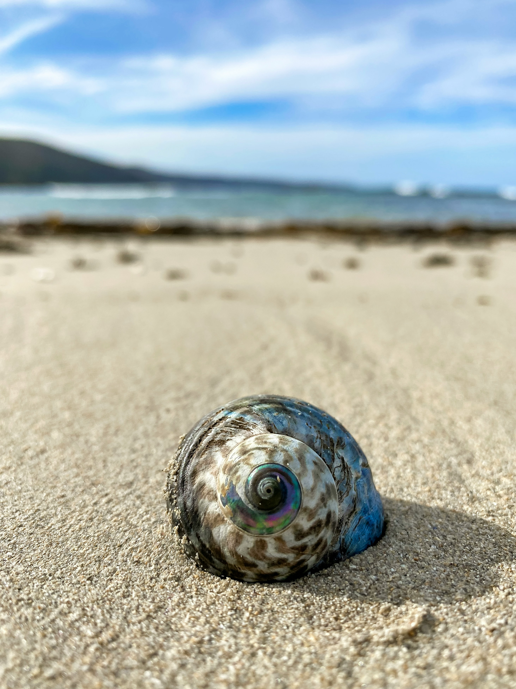

01 of 06
Madeira
Vinice na útesech, subtropická příroda a stezky podél horských levád – ostrov, který zamiluje na první nádech.
Zobrazit destinaciExkluzivní cesty na míru – vzdálené destinace, špičkový servis, zážitky na celý život.
Proč vybrat Snail Travel?
Inspirováni hlemýžděm neseme svět s sebou – beze spěchu, s pokorou a citem pro detail.
Kontaktujte nás01 of 06
Vinice na útesech, subtropická příroda a stezky podél horských levád – ostrov, který zamiluje na první nádech.
Zobrazit destinaci02 of 06
Sopečná jezera, velryby na dohled od lodi a zeleň, která nemá v Atlantiku obdoby.
Zobrazit destinaci03 of 06
Vodní vily nad tyrkysovou lagunou a ticho, které slyšíte jen tam.
Zobrazit destinaci04 of 06
Bílé pláže, golfová hřiště světové úrovně a pohostinnost, na kterou se nezapomíná.
Zobrazit destinaci05 of 06
Žulové balvany, panenské pláže a ostrovy, kde příroda diktuje tempo.
Zobrazit destinaci06 of 06
Rýžová pole, chrámy a wellness kultura, která proměňuje dovolenou v rituál.
Zobrazit destinaci
destinace
Vinice na útesech, subtropická příroda a stezky podél horských levád – ostrov, který zamiluje na první nádech.

destinace
Sopečná jezera, velryby na dohled od lodi a zeleň, která nemá v Atlantiku obdoby.

destinace
Vodní vily nad tyrkysovou lagunou a ticho, které slyšíte jen tam.

destinace
Bílé pláže, golfová hřiště světové úrovně a pohostinnost, na kterou se nezapomíná.

destinace
Žulové balvany, panenské pláže a ostrovy, kde příroda diktuje tempo.

destinace
Rýžová pole, chrámy a wellness kultura, která proměňuje dovolenou v rituál.

Proč Snail Travel
Žádné dvě cesty nejsou stejné. Vše tvoříme od základu podle vašich přání a tempa.
Diskrétnost a exkluzivní přístup k místům, kam se běžný cestovatel nedostane.
Dáváme vám prostor cestu skutečně prožít – bez spěchu, bez kompromisů.
Nejste číslo v systému. Telefon vám zvedneme kdykoliv, ne jen v úředních hodinách.
Deset způsobů, jak může vypadat vaše příští cesta – vybíráme jen to, co má smysl zažít osobně.
 01
01
Golfové rezidence u moře – hřiště s výhledem, který odvádí pozornost od skóre.
 02
02
Buš, tichem rušená jen křikem ptáků, a stan, který nikdo jiný nesdílí.
 03
03
Dny beze spěchu, věnované jen sobě.
 04
04
Dům, který se stará o všechno kromě vzpomínek.
 05
05
Evropské metropole na pár dní, beze spěchu.
 06
06
Váš den, na místě, které si budete pamatovat navždy.